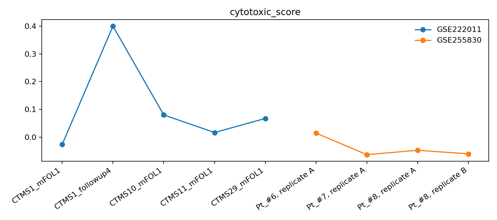
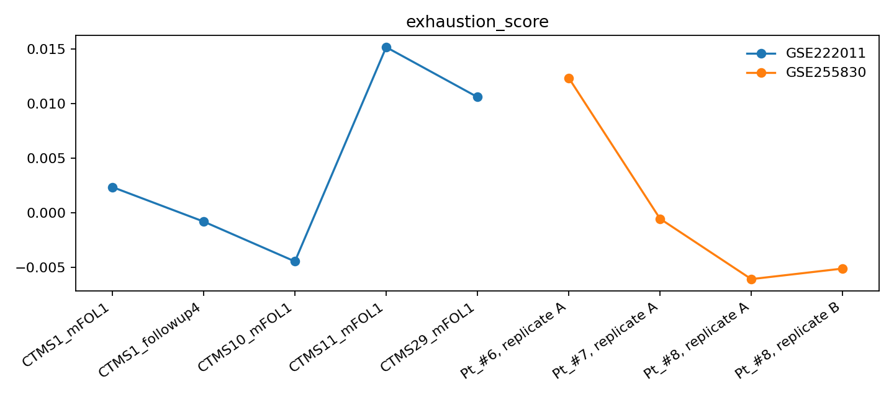
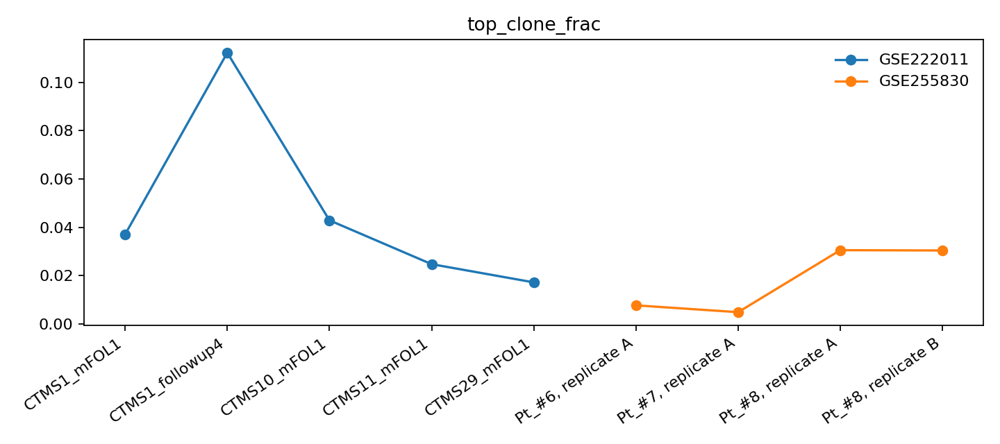

Open Combo GEO Reanalysis
This page re-analyzes the open combo cohorts GSE222011 and GSE255830 with sample-level T-cell state and clonotype summaries, while keeping the NeoPrecis vs NeoICI comparison contract-level rather than claiming a paired score rerun.
Combined sample table
| dataset | sample | title | n_cells | cytotoxic_score | exhaustion_score | memory_score | activation_score | proliferation_score | response_index | tcr_cells | tcr_clonotypes | top_clone_frac | tcr_entropy | tcr_gini |
|---|---|---|---|---|---|---|---|---|---|---|---|---|---|---|
| GSE222011 | CTMS1_mFOL1 | CTMS1_mFOL1 | 11077 | -0.026916 | 0.002357 | 0.346616 | 0.025744 | -0.031443 | -0.016401 | 10594.0 | 6080.0 | 0.037096 | 11.916535 | 0.299021 |
| GSE222011 | CTMS1_followup4 | CTMS1_followup4 | 9917 | 0.400335 | -0.000806 | 0.409559 | 0.035148 | -0.034996 | 0.418715 | 15581.0 | 5824.0 | 0.112252 | 10.489680 | 0.432605 |
| GSE222011 | CTMS10_mFOL1 | CTMS10_mFOL1 | 14704 | 0.079747 | -0.004460 | 0.889055 | -0.039665 | -0.030422 | 0.064375 | 25835.0 | 9888.0 | 0.042926 | 12.526640 | 0.337348 |
| GSE222011 | CTMS11_mFOL1 | CTMS11_mFOL1 | 10854 | 0.016257 | 0.015184 | 0.408294 | 0.082881 | -0.042036 | 0.042514 | 18799.0 | 7834.0 | 0.024789 | 12.235337 | 0.310989 |
| GSE222011 | CTMS29_mFOL1 | CTMS29_mFOL1 | 10607 | 0.067013 | 0.010608 | 0.739110 | -0.000344 | -0.035589 | 0.056232 | 19298.0 | 7967.0 | 0.017256 | 12.411242 | 0.265623 |
| GSE255830 | Pt_#6, replicate A | Pt_#6, replicate A | 10069 | 0.014218 | 0.012363 | 0.608840 | 0.003822 | -0.036786 | 0.003766 | 15494.0 | 6881.0 | 0.007745 | 12.465951 | 0.210706 |
| GSE255830 | Pt_#7, replicate A | Pt_#7, replicate A | 11422 | -0.063741 | -0.000545 | 0.713360 | 0.012584 | -0.044097 | -0.056904 | 20697.0 | 9499.0 | 0.004928 | 13.067664 | 0.178015 |
| GSE255830 | Pt_#8, replicate A | Pt_#8, replicate A | 10083 | -0.047777 | -0.006084 | 0.286379 | 0.149068 | -0.004531 | 0.032840 | 11772.0 | 6930.0 | 0.030581 | 12.323831 | 0.264675 |
| GSE255830 | Pt_#8, replicate B | Pt_#8, replicate B | 9380 | -0.060739 | -0.005116 | 0.274496 | 0.096921 | -0.001426 | -0.007163 | 10672.0 | 6279.0 | 0.030454 | 12.159792 | 0.265692 |
Contract table
| system | type | best_claim | current_status |
|---|---|---|---|
| NeoPrecis | published contract | Immunogenicity + clonality-aware landscape improves ICI response prediction and has CEDAR/NCI/melanoma/NSCLC benchmarks. | published; not locally paired to the combo cohorts in this workspace |
| NeoICI_GA_RL_combo_v1 | local combo prioritizer | experiment-priority combo-therapy layer | academic_validation_like AUPRC 0.863; industrial_locked_v0 AUPRC 0.563 |
| KG_GA_evolved | local champion | retrospective validation-like champion | academic_validation_like AUPRC 0.978 |
| BioDarwin_mode_bank_v4 | industrial anchor | locked public mini-set anchor | industrial_locked_v0 AUPRC 0.628 |
Figures



